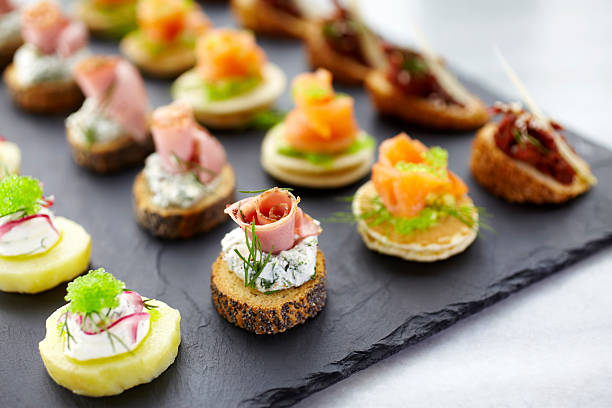

Here at Capstone, we do our best to use seasonal offerings to create the freshest dishes.
Below are some previous menus we have executed.
For each client we are happy to provide a bespoke menu within your budget.

We offer a wide range of canapes for formal functions or laid back gatherings.
Click below to view a canape sample menu.